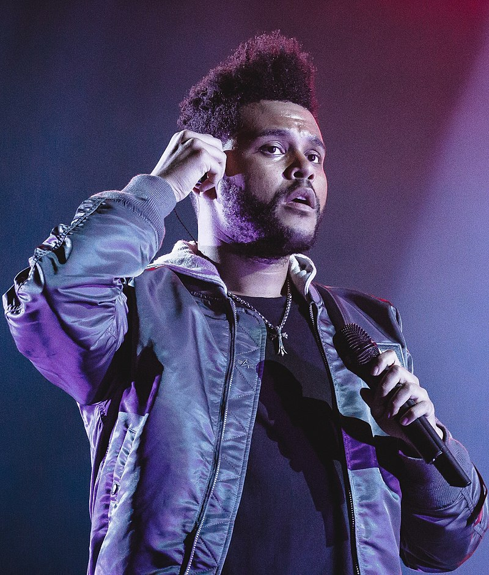

The Weeknd
X'O

About
Abel Makkonen Tesfaye, also known as The Weeknd was born February 16, 1990 (age 29) in Toronto, Ontario, Canada. He is a Canadian singer, songwriter and record producer.
Accomplishment
He has won three Grammy Awards, eight Billboard Music Awards, two American Music Awards, nine Juno Awards, and has been nominated for one Academy Award. He has sold over 100 million records worldwide, makng him one of the world's best-selling artist.